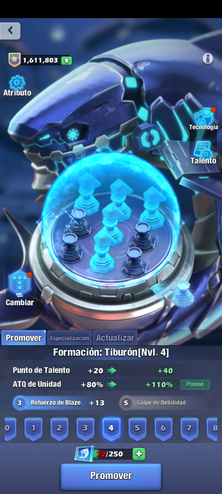
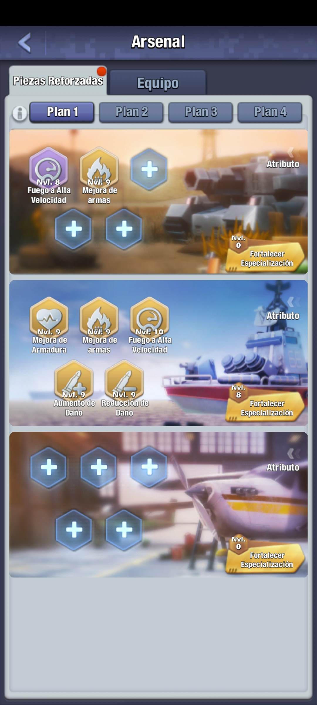

| Recolectar recursos: Odinium Petróleo Comida |
| Subir Formaciones: Hologramas Resonadores Guías  |
| Completar Misiones de Radar |
| Usar planos de arma |
| Eliminar Warhammers |
| Eliminar Terrores |
| Mejora de tecnología en el Centro de Comando |
Mejora de puntos de Decoración |
| Eliminar Fuerzas Oscuras |
| Mejora del CP de Clase |
Mejora de la Tecnología de Odinium |
| Mejora de la tecnología Valhalla |
| Abrir Cofres de Piezas Reforzadas |
| Convertir Piezas Reforzadas a EXP |
| Usar investigación de Maestría  |
| Subir de nivel Héroes |
| Subir de Estrellas a un Héroe |
| Reclutar Héroes |
| Subir de nivel Tropa Pesada |
| Subir de nivel a un Chip |
| Realizar Overclocking |
| Atacar al Jefe Mundial |
| Acelerar entrenamiento de Valhallas |
| Entrenar Valhallas |
| Entrenar tropas |
| Acelerar entrenamiento de tropas |
| Eliminar Fuerzas Oscuras |
| Eliminar Fuerzas Oscuras |
| Eliminar unidades de la alianza rival |
| Perder unidades en combate contra la alianza rival |
| Recolectar en venas especiales |
| Usar gemas en la reparación de unidades |
| Usar aceleradores de reparación de unidades |